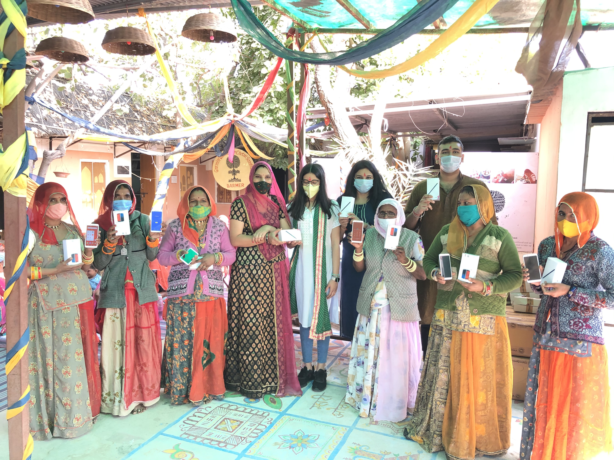
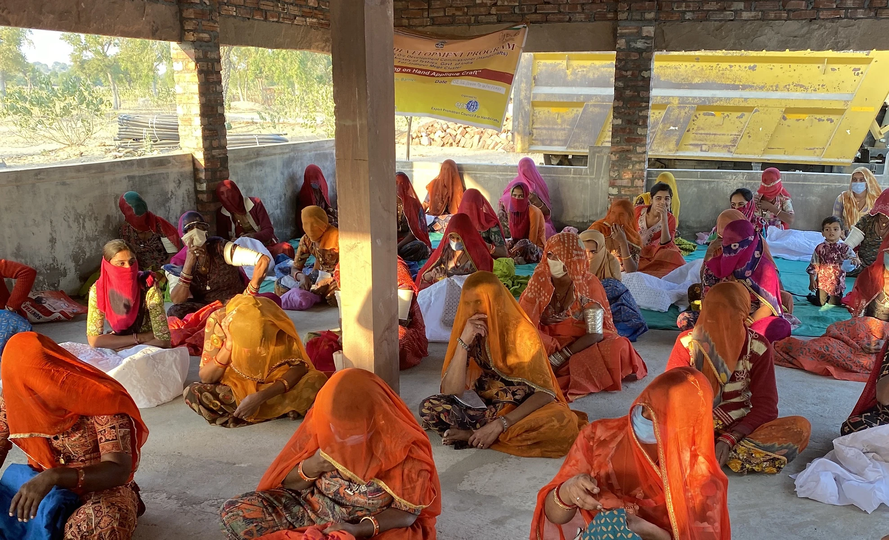
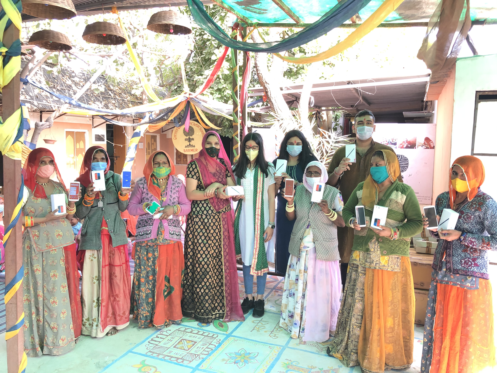
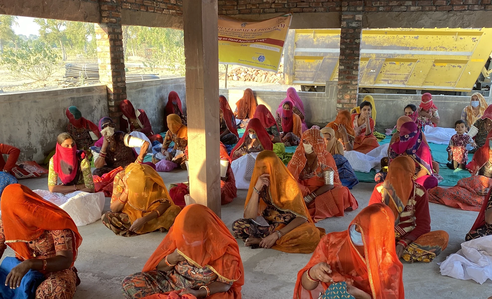

Anya Kathpalia
Hey there! I am Anya Kathpalia, a first year Computer Science major at Tech.
I am the founder of hersuccessbits.com, a women empowerment platform which brings the voices of diverse women into limelight. hersuccessbits.com has been reccognised by the United Nations and the National e Governance Division, Government Of India. Her Success Bits is a 1000+ member community and has interviews and stories of over 100 women from across the globe.
During COVID times, I undertook a massive social project Project Jagriti through which I raised funds and gave digital literacy sessions and smart phones to over 200 women artisans from a network of villages in rural Rajasthan. Project Jagriti was featured in numerous local newspapers of Rajasthan. I was also shortlisted as one of the 10 finalists worldwide for the Canon Young Champion of the Year award by Global Good Awards.
I strongly believe in Imaging For Good and creatively using the digital spaces for social impact. My video on Project Jagriti was shortlisted by the UN and Canon and featured as part of the UN 2021 week to Act4SDGs.
I am also currently developing a productity app using React Native and firebase (github repository) and am really passionate about frontend dev. I really do look forward to being a part of the Bits of Good Team and continue making a positive impact in our community.
 


